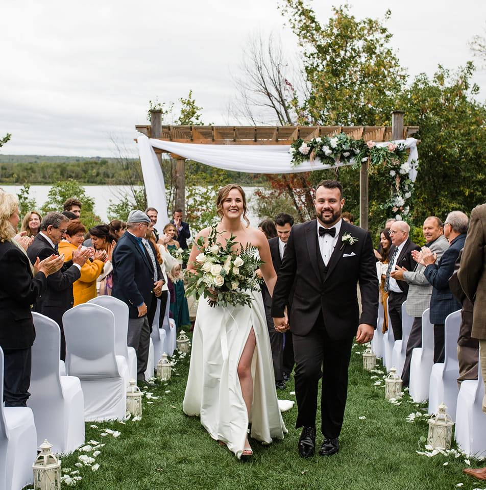

My name is Devin (he/him), I am 31 years old and have recently gotten married to my wife Myriam.
I have a beautiful wolf-dog named Fenrir, and no children.. yet!
I currently work in the craft beer industry as a quality control manager/lab lead technician.
I am looking to expand my horizons, transferring into the IT sector, as I have a passion for it.
